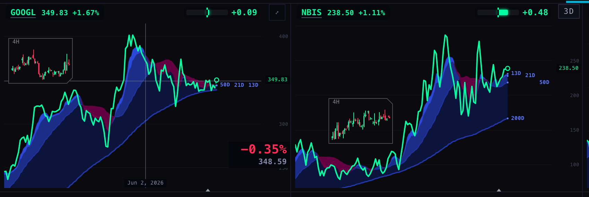
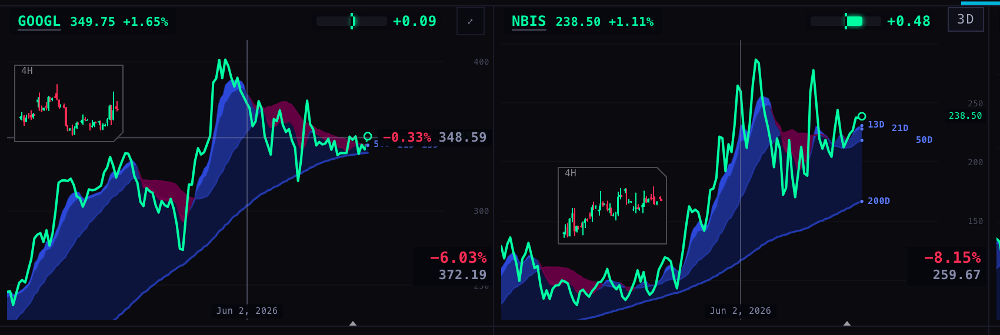
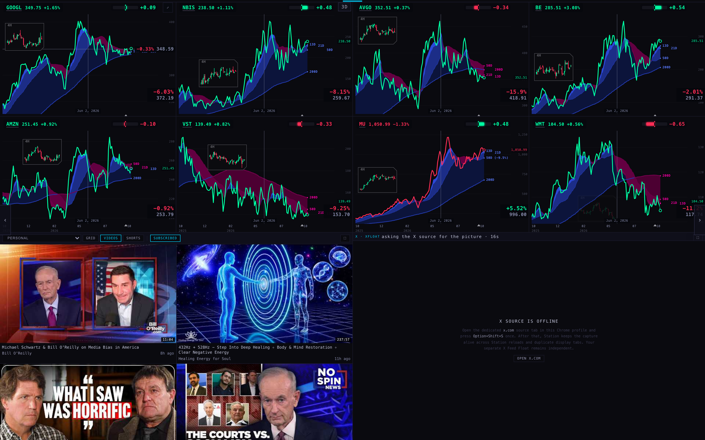
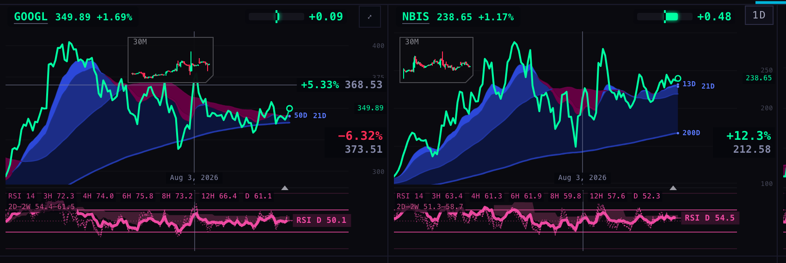
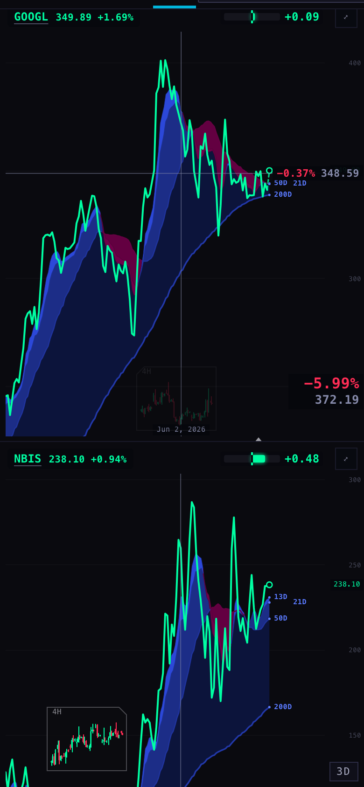
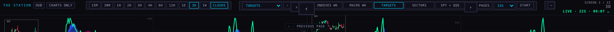
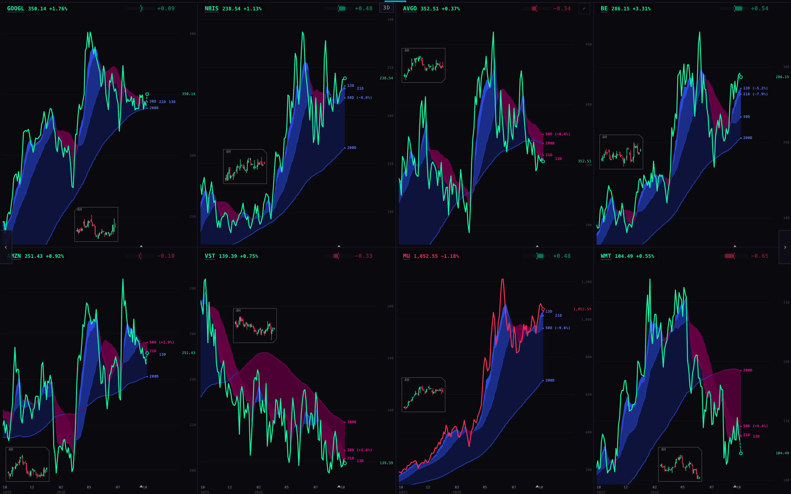
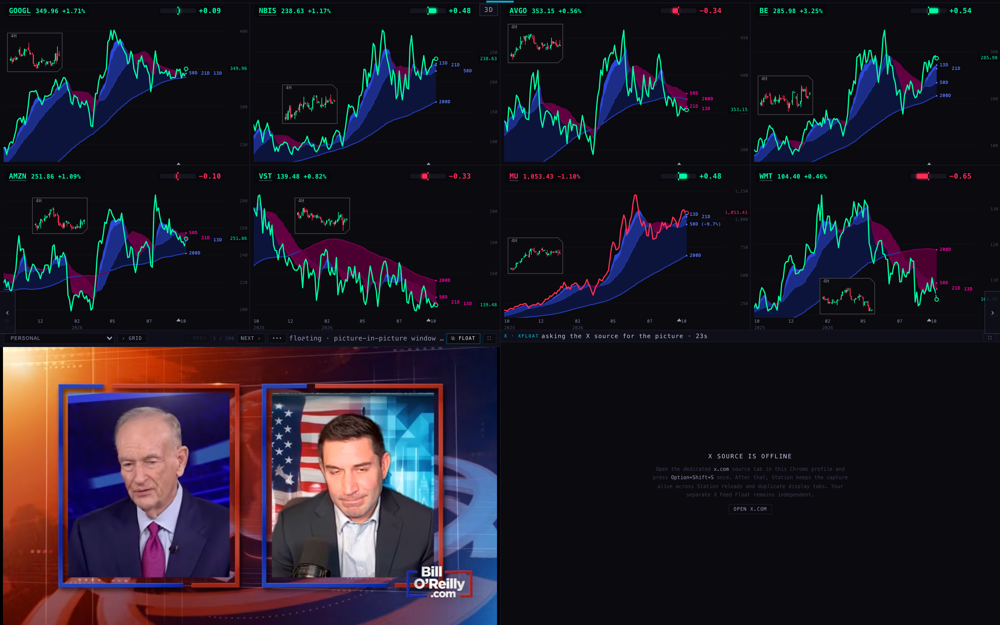

Station · 1 Oct: the crosshair stays and works on every chart, charts only, a floating video
Branch station/s5-crosshair-fullscreen-pip-20261001, built on today's live Station (75e653c). Before starting, I checked that the live Station serves exactly these files. Not pushed, not deployed. All five items are built. Each was tested in a hidden browser and photographed at 1680 wide and at phone width (390).
In one minute
The crosshair no longer disappears. I reproduced it. On today's Station, with the mouse held still over a chart, the crosshair was gone after 5 seconds. The cause was the chart's routine repaint for each new price, which wiped it. Now it stays as long as the mouse is over the chart (tested for 16 seconds, and through a repaint). It leaves when the mouse leaves the chart. On a phone or iPad, it leaves 4 seconds after your last touch.
The % is in proportion. On the 8-chart page it was 18 px. It is now 13 px over an 11 px price, so the % is a little bigger than the price. It grows with bigger charts, up to 16 px over 12.8 px.
One date, every chart. Hover one chart and the same date's line appears on every chart on the page. Each chart shows its own price on that date and the % from then to now, green when it is higher now. On TARGETS at 2 Jun 2026: MU +5.52%, AVGO −15.9%, WMT −11.2% and so on. The horizontal line and its price tag stay on the chart under your mouse.
Charts only, at last visible. The button already existed, but it sat in a part of the top strip that has been hidden since 23 Sep. That's why you never saw it. Only the W key worked. It is now the second button, right after HUB. It gives the whole screen to the charts (the chart area went from 554 to 1050 px tall). Rotation keeps running, and the setting is remembered.
Floating video. A ⧉ FLOAT button on the video panel lifts the playing video into a floating window that stays on top. It starts at the same second (tested: the panel was at 24.0 s and the window started at 24 s). The panel pauses so the two don't play at once. Where a browser can't do this, a small separate window opens instead. The panel says in words which kind you got.
1 · The crosshair stays
"it goes away very quickly when I stop moving my mouse"
The chart repaints itself every time a new price arrives, every few seconds. The crosshair was drawn as part of that same picture, so each repaint wiped it. The crosshair now lives on its own see-through layer on top of the chart. The chart remembers where your mouse is, so a repaint puts the crosshair back in the same place.
Mouse held still over GOOGL on TARGETS, checked once a second for 16 s
1 = crosshair drawn
Today's Station (live code)
1111100000000000
This branch
1111111111111111
It also used to vanish when the mouse passed over the ticker badge or the Geiger chip, which sit on top of the chart. It now leaves only when the mouse leaves the chart area. Clicking without dragging keeps it. On a phone, tapping a chart puts the crosshair there for 4 seconds. Tested: drawn at 3 s, gone at 5 s.
2 · In proportion
"you made the percent bigger but it's too big, bro, crazy big… think UI UX proportions"
Same corner as before: bottom right of each chart, with the % on top and the price under it.
Chart size
% before
% now
price now
8 charts at 1680 (277 px tall)
18 px
13 px
11 px
6 charts (360 px)
18 px
16 px
12.8 px
Phone (473 px)
18 px
16 px
12.8 px
The price never goes below 11 px, the wall's minimum for text. So on the 8-chart page the % is about a fifth larger than the price, not a full quarter. That ratio reaches a quarter on bigger charts.
3 · On every chart at once
"the charts are synced in terms of the date… make that grid work on all of the charts… I see the percentage price change to all of the charts… a really cool way of tracking my targets and upside downside"

BEFORE (live code): only GOOGL, the chart under the mouse, has the crosshair. Its % is 18 px and measures the mouse's price level against now.

AFTER: the same date line (2 Jun 2026) on GOOGL and NBIS. Each corner shows that chart's price on 2 Jun and the % from then to now. GOOGL also has the horizontal line, with its tag "−0.33% 348.59".

AFTER, the whole TARGETS page at 1680: all eight charts carry the 2 Jun line and their own readout. MU is the only one higher now (green +5.52%).

AFTER, TARGETS · RSI: the date line runs through the RSI panel, and each chart's RSI row reads its own values on that date (GOOGL "3H 72.3 4H 74.0 … D 61.1").

Phone 390, after a tap on GOOGL: % 16 px over a 12.8 px price; NBIS below shows the same date.
What the numbers are
Price on that date is that chart's own bar at the date you are pointing at. If a chart has no bar at that exact moment (futures and stocks keep different hours), it uses its last bar before that moment. On daily charts, a date means that calendar day, even when one market stamps its days at New York midnight and another at London midnight. If a chart's history starts after that date, it shows nothing.
Now is the same price the chart's badge shows: the live quote, or the last bar when there is no quote.
% = now ÷ price on that date − 1. Green when now is higher, red when lower.
The tag on the horizontal line (chart under the mouse only) keeps the old rule: that price level against now. It is green when the level is above the current price and red when below.
Only the top layer is redrawn. I counted: sweeping the mouse 40 steps across a chart redrew the top layer 40 times on every chart and the charts themselves 0 times.
4 · Charts only
"a way to expand the chart area full screen so that I do not see the YouTube and the X. I've mentioned that several times."
It was built on 24 Sep (M47). On 23 Sep, though, the top strip's "video feed" section was hidden, and the button lived inside that section. Only the W key ever worked. The button now sits beside HUB. Pressing it again brings the videos and X back. The setting is remembered in this browser.

The top strip with "CHARTS ONLY" beside HUB.

Charts only on, 1680: the eight TARGETS charts fill the screen (1050 px tall, up from 554).
Checked in the hidden browser
1680
390
Button visible in the strip
yes (78×18 px)
yes
Press: video and X hidden, charts take the space
yes
yes
Reload: still on
yes
yes
Rotation keeps going (TARGETS → SECTORS while on)
yes
yes
Press again: video and X back
yes
yes
W key, twice: on, then off
yes
yes
The video and X are hidden, not closed: X keeps its live capture running behind the charts, as M47 intended, so bringing them back is instant.
5 · Floating video (picture-in-picture)
"a little picture in picture player that actually goes off the station PWA… they're discussing charts"
Press ⧉ FLOAT on the video panel's bar (it shows while a video plays; the same item is also in the ••• menu). The video opens in a floating window that stays above every other window, outside the Station, at the second it was at. The panel pauses and says which kind of window you got:
"floating · picture-in-picture window (always on top)": the proper floating window. Chrome, Edge and Brave have it.
"floating · separate window (this browser has no always-on-top picture-in-picture)": Safari and Firefox, and phones. A small normal window playing the video on YouTube, from the same second.

The Station after pressing FLOAT: the panel is paused, and its bar reads "floating · picture-in-picture window …" beside the ⧉ FLOAT button.The floating window itself, playing the same video from 24 s. (A hidden browser draws it at full size; on your screen it opens small, 480×270, and you can resize it.)
Why your extension gave a black frame: YouTube plays inside its own sealed frame. A browser extension can only lift a bare video, so it got nothing. This button moves the whole player into the floating window instead.
One snag I found and fixed: my first attempt put the YouTube player straight into the floating window. YouTube refused it ("Error 153 · video player configuration error") because that window has no web address. The floating window now opens a tiny Station page, /station-shells/pip-v1/, which holds the player. That page reads and saves nothing.
Checked in a hidden Chromium 151
Result
Floating-window support present
yes
Click in the panel → the Station opens the floating window
yes, opened
Same second (1680 run)
panel at 24.03 s → window starts at 24 s
Same second (390 run)
panel at 40.09 s → window starts at 40 s
Panel paused
yes (YouTube state "paused")
Browser without support (simulated)
separate window at watch?v=…&t=32s; panel says so
Your one-line check in Brave on the iMac (after this is deployed):
Play any video on the Station, press ⧉ FLOAT, and read the words on the video bar. "picture-in-picture window (always on top)" means Brave is using the proper path. Or, before deploying: in Brave press ⌥⌘J and paste 'documentPictureInPicture' in window. true means the proper path is available.
What could be wrong
Brave itself was not tested. I only tested Chromium, the engine Brave is built on, and never touched the iMac. Brave Shields could block the YouTube player inside the floating window; the check above will show it.
The floating window's real on-screen size (480×270) and its staying on top can't be seen in a hidden browser. The test proves the window opens and plays the right video from the right second.
When you close the floating window, the panel stays paused at the second you lifted it. It does not pick up where the floating window stopped.
On the right-hand charts, the Station's own "›" next-page arrow partly covers the readout corner (visible on WMT). That was true before today and is unchanged.
On a phone, the panel's status sentence is shortened to "float…" (the full sentence is its tooltip).
The date line uses each chart's bar start time. Two charts with different bar sizes can each show a bar that "contains" the date, a few hours apart.
What I did not do
No push, no deploy, no data written anywhere. Nothing ran on the iMac.
The X column on the left, the "blueprint" layout, and the editable chart space are not built. You asked for a blueprint first.
The older top-level video page (video-v1, kept for rollback) is unchanged.
Tests
node --test tests/: 910 tests, 891 pass, 18 fail. The 18 failures are exactly the 18 that already fail on the live Station; none are new, and none were fixed. I added tests/station-crosshair-s5-20261001.test.mjs (16 tests covering all five items). I updated 6 older tests that pinned the old crosshair's exact code or the old 14–18 px rule; each change notes why.
Proof scripts: harness/crosshair.mjs, hold.mjs, chartsonly.mjs, pip.mjs. All ran hidden. Chart prices came from the chart service, fetched by the test script with the scintillahub.ai origin, because the service only answers that site. The browser's cross-site check was relaxed for these local runs.